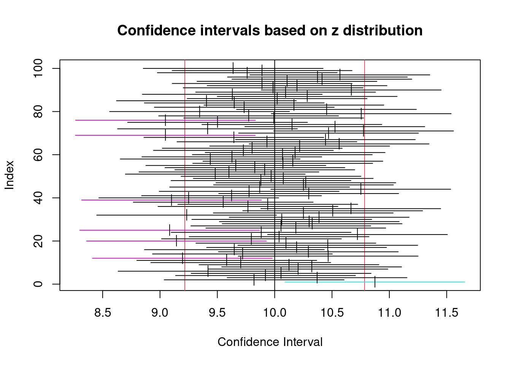
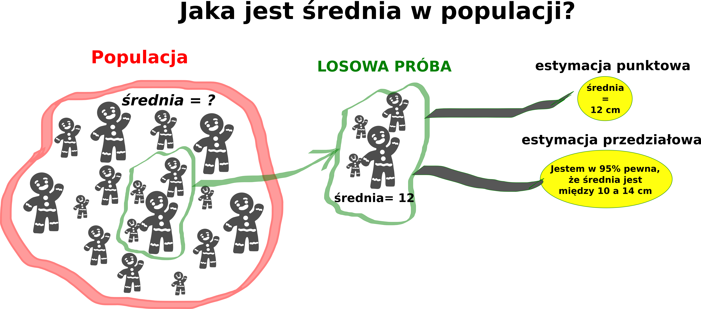

11 Estymacja punktowa i przedziałowa
Estymacja to oszacowanie (z pewną dokładnością) na podstawie próby wartości badanej cechy statystycznej (np. średniej) oraz rozciągnięcie otrzymanych wyników na całą populację.

11.1 Podstawowe pojęcia
Rozkład próby
Błąd standardowy (ang. Standard Error) danej statystyki (miary, np. średniej) - odchylenie standardowe rozkładu wartości z próby
Prawo wielkich liczb (ang. law of large numbers - LLN) - teoria mówiąca, iż zwiększając liczbę doświadczeń opartych na zdarzeniach losowych, możemy oczekiwać rozkładu wyników (próba) coraz lepiej odpowiadającego rozkładowi prawdopodobieństw zdarzeń (populacja) oraz, iż tym większe są na to szanse im większa jest liczba doświadczeń
Centralne twierdzenie graniczne (ang. central limit theorem - CLT) - teoria mówiąca, iż średnia wystarczająco dużego zbioru liczb niezależnych prób losowych, każdych ze skończoną średnią i wariancją, będzie posiadała w przybliżeniu rozkład normalny
- https://gallery.shinyapps.io/CLT_mean/
- https://ihstevenson.shinyapps.io/sample_means/
11.2 Estymacja punktowa
- ustalenie wartości liczbowej nieznanego parametru (np. średniej) na podstawie wyników próby.
- dla każdej próby losowej liczymy wartość średnią.
- zazwyczaj wartość średnia wyliczona z próby nie będzie zgodna z wartością średnią dla populacji.
11.3 Estymacja przedziałowa
Numeryczne podsumowanie niepewności estymacji
Wyznaczamy pewien przedział liczbowy, który z pewnym prawdopodobieństwem zawiera wartość nieznanego parametru. Przedział taki nazywany jest przedziałem ufności.
- Np. 95% przedział ufności mówi, że dla 95% z próby, ten przedział zawiera poprawną wartość
11.3.1 Przedział ufności
- zakres możliwych wartości dla nieznanej średniej populacji oparty na danych próby
- wyliczany jest dla oszacowania wartości pewnej charakterystyki populacji (np. średniej arytmetycznej) na podstawie próby.
- wartość charakterystki (np.średniej) wyliczona z próby, będzie się nieco róźnić od tej dla całej populacji.
- gdy próba jest reprezentatywna możemy oczekiwać niezbyt dużych różnic między rzeczywistą wartością charakterystyki dla populacji, a wyznaczoną z próby. PODSUMOWUJĄC: Przedział ufności określa nam prawdopodobny zakres odchylenia naszych wyliczeń od wartości rzeczywistej.
Interpretacja
Jeśli wielokrotnie z wielu niezależnych prób losowych będziemy wyznaczali przedziały, to \(100(1-\alpha)%\) (np. 95%) takich przedziałów będzie zawierało prawdziwą wartość parametru.
Zatem przy dużej liczbie powtórzeń zdanie “Prawdziwa wartość parametru mieści się w przedziale ufności” będzie prawdziwe w \(100(1-\alpha)%\) powtórzeń.
Często (choć mniej precyzyjnie) przedział ufności określany jest zdaniem: “z 95% prawdpopodobieństwem przedział zawiera wartość parametru”
Przykład:
- Tworzymy próbę z 25 obserwacjami z rozkładu normalnego o średniej 10 i odchyleniu standardowym 2. Wyliczamy 95% przedział ufności. Powtarzamy to stukrotnie. Kolorem czarnym zaznaczono przedziały, które zawierają średnią, innym kolorem te które średniej nie zawierają.
Wykonaj powyższe obliczenie przy założeniu 90% oraz 99% poziomu ufności.
Funkcja ta pozwala na definiowanie przedziału ufności za pomocą suwaka i interaktywne wprowadzanie zmian.
library(TeachingDemos)
if(interactive()) {
run.ci.examp()
}11.3.2 Obliczanie przedziału ufności (CI)
Założenia
- Dane próby są próbą losową z populacji (każda wartość ma takie same szanse wylosowania)
- Rozkład danych populacji jest normalny (trzeba pamiętać, że określenie normalności rozkładu nie może być kompletne bez posiadania danych całej populacji)
Wyznaczenie CI
- zdefiniowanie parametru populacji (np. średnia)
- określeniu poziomu ufności - wartość od 0 do 100% (zazwyczaj 95 lub 99%)
- wyliczenie wartości krytycznych rozkładu t-Studenta (stosowany, gdy nie znamy odchylenia standardowego populacji) lub rozkładu normalnego (gdy znamy odchylenie standardowe populacji)
- podanie wartości przedziału, np. w postaci (dolna granica, gorna granica)
Przedział ufności dla średniej ma postać \(Średnia \pm Zakres błędu\) ( \(Mean \pm Margin of error\) )
11.4 Estymacja parametrów w R
Estymacja parametrów w R zostanie omówiona na przykładzie danych survey z pakietu MASS. Zbiór ten zawiera wyniki badania studentów z Australijskiego uniwersytetu, którzy udzielali odpowiedzi na różne pytania.
library(MASS)
head(survey) Sex Wr.Hnd NW.Hnd W.Hnd Fold Pulse Clap Exer Smoke Height M.I
1 Female 18.5 18.0 Right R on L 92 Left Some Never 173.00 Metric
2 Male 19.5 20.5 Left R on L 104 Left None Regul 177.80 Imperial
3 Male 18.0 13.3 Right L on R 87 Neither None Occas NA <NA>
4 Male 18.8 18.9 Right R on L NA Neither None Never 160.00 Metric
5 Male 20.0 20.0 Right Neither 35 Right Some Never 165.00 Metric
6 Female 18.0 17.7 Right L on R 64 Right Some Never 172.72 Imperial
Age
1 18.250
2 17.583
3 16.917
4 20.333
5 23.667
6 21.000Więcej informacji o zbiorze danych znajduje się w dokumentacji
help(survey)11.4.1 Estymacja punktowa średniej z populacji.
Badanie zostało przeprowadzone na próbie 237 studenów. Możemy obliczyć średnią z próby, którą będziemy traktować jako oszacowanie średniej populacji.
Problem: Oszacować średni wzrost studentów uniwersytetu na podstawie danych z próby
Rozwiązanie:
#Przypisanie wzrostu studentów do zmiennej wzrost
wzrost <- survey$HeightObliczenie średniego wzrostu na podstawie wyników badania. Argument na.rm = TRUE jest konieczny - nie wszyscy studenci odpowiedzieli na to pytanie.
mean(wzrost, na.rm=TRUE) [1] 172.3809Odpowiedź:
Średni wzrostu studentów wynosi 172,38 cm.
11.4.2 Wyznaczenie przedziałów ufności dla średniej znając odchylenie standardowe (SD)
W poprzednim przykładzie określona została wartość średniej na podstawie próby. W tym przykładzie wyznaczymy przedział ufności - który określi nam z jaką “dokładnością” oszacowaliśmy wartość średniej.
Przy założeniu, że odchylenie standardowe jest znane do wyznaczenia przedziału, w jakim znajduje się wartość średnia, możemy posłużyć się wzorem:
\[\overline{x} \pm z_{\alpha/2} \frac{\sigma} {\sqrt{n}}\]
gdzie, \(z_{\alpha/2}\) oznacza 100(1-\(\alpha\)) percentyl standaryzowanego rozkładu normalnego.
Problem
Załóżmy, że odchylenie standardowe populacji \(\sigma\) dla wzrostu studentów wynosi 9.48. Znajdź zakres błędu (ang. margin of error) oraz przedział, w którym znajduje się średnia przy założeniu 95% poziomu ufności.
Rozwiązanie:
Obliczamy błąd standardowy średniej:
wzrost <- na.omit(survey$Height)
n <- length(wzrost)
sigma <- 9.48 # odchylenie standardowe populacji
sem <- sigma/sqrt(n) # błąd standardowy średniej
sem #błąd standardowy średniej[1] 0.6557453Obliczamy zakres błędu.
Przyjmujemy poziom ufności \(1-\alpha = 0.95\) (95%). Zatem \(\alpha=0.05\), a \(\alpha/2=0.025\). Zatem \(z_{\alpha/2}\) obliczyć można za pomocą funkcji qnorm(0.025, lower.tail = FALSE) (statystyka z oznacza, że przyjmujemy rozkład normalny). Jeśli wynik wymnożymy przez błąd standardowy średniej (sem) uzyskamy zakres błędu (ang. margin of error).
E = qnorm(0.025, lower.tail = FALSE) * sem # zakres błędu
E #zakres błędu[1] 1.285237Następnie wartość błędu dodajemy do średniej i otrzymujemy przedział ufności:
sr_wzrost <- mean(wzrost) # średnia próby
sr_wzrost + c(-E, E) # przedzial ufności[1] 171.0956 173.6661Odpowiedź:
Zakładając, że odchylenie standardowe populacji jest równe 9.48 to zakres błędu w ocenie wzrostu studentów przy 95% poziom ufności wynosi 1,2852 cm. Przedział ufności jest pomiędzy 171.10 a 173.67 cm.
Znajdź przedział, w którym znajduje się średnia przy założeniu 99% poziomu ufności.
#Wartosc sem nie zmieni się, sem = sigma/sqrt(n)
wzrost <- na.omit(survey$Height)
sem = 9.48/sqrt(length(wzrost))
#Zakladamy 99% poziom ufnosci, zatem 1-alfa=0.99, alfa=0.01, alfa/2=0.005,
E = qnorm(0.005, lower.tail = FALSE) * sem
srednia<- mean(wzrost)
ci <- srednia + c(-E, E) # przedzial ufności11.4.3 Wyznaczanie przedziałów ufności dla średniej populacji nieznając odchylenia standardowego (SD)
Przy założeniu, że odchylenie standardowe jest nieznane do wyznaczenia przedziału, w jakim znajduje się wartość średnia, możemy posłużyć się wzorem:
\[\overline{x} \pm t_{\alpha/2} \frac{s} {\sqrt{n}}\]
gdzie, \(t_{\alpha/2}\) oznacza 100(1-\(\alpha\)) percentyl rozkładu t-Studenta z n-1 stopni swobody.
Problem
Znajdź zakres błędu (ang. margin of error) oraz przedział ,w którym znajduje się średnia przy założeniu 95% poziomu ufności oraz zakładając, że odchylenie standardowe populacji jest nieznane.
Rozwiązanie
library(MASS) # load the MASS package
wzrost <- na.omit(survey$Height)
n = length(wzrost)
s = sd(wzrost) # odchylenie standardowe próby
SE = s/sqrt(n)
SE #szacowany błąd standardowy średniej (standard error estimate)[1] 0.6811677Obliczenie zakresu błędu
E = qt(0.025, df=n-1, lower.tail = FALSE) * sem
E # zakres błędu margin of error [1] 1.292759Następnie wartość błędu dodajemy do średniej i otrzymujemy przedział ufności:
sr_wzrost <- mean(wzrost) # średnia próby
sr_wzrost + c(-E, E) # CI[1] 171.0881 173.6736Odpowiedź
Przy założeniu, że odchylenie standardowe z populacji jest nienznane to zakres błędu w ocenie wzrostu studentów przy 95% poziom ufności wynosi 1.3429 cm. Przedział ufności jest pomiędzy 171.04 a 173.72 cm.
Znajdź przedział, w którym znajduje się średnia przy założeniu 99% poziomu ufności (i nieznanym odchyleniu standardowym populacji)
Kod R
#Wartosc sem nie zmieni się, sem = sigma/sqrt(n)
wzrost <- na.omit(survey$Height)
SE = sd(wzrost)/sqrt(length(wzrost))
#Zakladamy 99% poziom ufnosci, zatem 1-alfa=0.99, alfa=0.01, alfa/2=0.005, prcentyl=0.99+0.005=0.995
E = qt(0.005, df=length(wzrost)-1)*SE # zakres błędu
srednia<- mean(wzrost)
ci <- srednia + c(-E, E) # przedzial ufnościZadanie: Zebraliśmy losową próbę, pytając 10 studentów z wybranego kierunku, którzy skończyli studia w 2019 roku, jakie są ich roczne zarobki. Otrzymaliśmy odpowiedź: x = c(44617, 7066, 17594, 2726, 1178, 18898, 5033, 37151, 4514, 4000). Oszacuj średnie zarobki wszystkich studentów studiujących na tym kierunku, którzy ukończyli studia w 2019 roku. Określ także 90 oraz 95% przedział ufności dla średniej. 1) Wykonaj obliczenia, zakładając, że zarobki mają rozkład normalny, z odchyleniem standardowym 15000. 2) Wykonaj obliczenia przy nieznanym odchyleniu standardowym.
Kod R
#dane
x <- c(44617, 7066, 17594, 2726, 1178, 18898, 5033, 37151, 4514, 4000)
# OBLICZENIA PRZY ZNANYM SD
srednia <- mean(x)
#blad standardowy sigma/sqrt(n), sigma to znane odchylenie standardowe a n to liczba elementów w probie
se <- 15000/10
#z(alfa/2) 1-alfa = 0.95, alfa=0.05, alfa/2=0.025,
#wykonujac obliczenia dla 99% poziomu ufnosci zamiast 0.025 nalezy wpisac 0.005
E = qnorm(0.025, lower.tail = FALSE)*se
ci = srednia + c(-E, E)
# odpowiedz: Srednie zarobki beda w przedziale 11338 a 17218 przy zalozeniu 95% poziomu ufnosci.
# odpowiedz: Srednie zarobki beda w przedziale 10414 a 18141 przy zalozeniu 99% poziomu ufnosci.
# OBLICZENIA PRZY NIEZNANYM SD
#jesli nieznamy sd to musimy oszacowac jego wartosc na podstawie proby
s = sd(x)
srednia = mean(x)
n = 10
SE = s/n
#zakres bledu przy nieznanym odchyleniu standardowym obliczamy korzystajac z rozkladu t-studenta
#wykonujac obliczenia dla 99% poziomu ufnosci zamiast 0.025 nalezy wpisac 0.005
E = qnorm(0.025, lower.tail = FALSE)*SE
ci = srednia + c(-E, E)
# odpowiedz: Srednie zarobki beda w przedziale 11270 a 17285 przy zalozeniu 95% poziomu ufnosci.
# odpowiedz: Srednie zarobki beda w przedziale 10325 a 18231 przy zalozeniu 99% poziomu ufnosci.
# Zauwaz, ze Zwiększanie poziomu ufności powoduje zwiększanie szerokości przedziału ufności - czyli zmniejszenie precyzji estymacji.